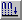

Construct a Smart Pattern
The Smart pattern option checks to see how the patterned geometry interacts with other features on the model. It is typically used to generate patterns when the feature being patterned goes across multiple part faces.

-
Choose Home tab→Pattern group→Pattern
 .
. -
Select the features to be included in the pattern and then click the Accept (check mark) button on the command bar.
-
On the command bar, select the Smart option

. -
Select the planar face or reference plane.
-
Create the pattern profile.
-
Finish the feature.
-
You can select the features you want to pattern before clicking the Pattern button. The command automatically advances to the Plane step.
-
You can also pattern edges, surfaces, and design bodies.
-
You can also construct pattern features in the Assembly environment using the Pattern Assembly Feature command.
How do I
Construct an ordered rectangular pattern featureCreate a 2D rectangular pattern of sketches
Construct an ordered circular pattern feature
Create a 2D circular pattern of sketches
Construct a Fast Pattern
Define the pattern plane
Learn more
Pattern featuresRectangular Pattern (ordered)
Circular patterns
Look up more details
Pattern command (ordered)Rectangular Pattern command bar (ordered sketch)
Circular Pattern command bar (ordered sketch)
Pattern command bar